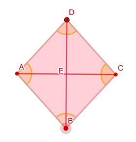
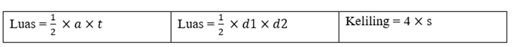
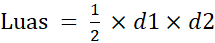

Belah ketupat adalah segiempat dengan sisi yang berhadapan sejajar, keempat sisinya sama panjang dan sudut-sudut yang berhadapan sama besar. Belah ketupat dibentuk dari gabungan segitiga sama kaki dan bayangan setelah dicerminkan terhadap alasnya.

Gambar 15 (Belah Ketupat)
Sifat-sifat belah ketupat:
a) Semua sisinya sama panjang
b) Diagonal-diagonalnya merupakan sumbu simetri.
c) Sudut-sudut yang berhadapan sama besar dan dibagi dua sama besar.
d) Kedua diagonalnya saling membagi dua sama panjang dan saling tegak lurus.
Rumus Belah Ketupat:
Diagonal pertama = a atau d1; Diagonal kedua = b atau d2; sisi = s
Tabel 4 (Rumus Belah Ketupat)

Belah ketupat yaitu mempunyai sisi yang sama panjang, sudut yang sama besar, dan mempunyai dua diagonal yang membagi.
Rumus:
,